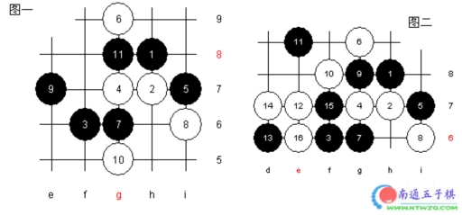

欺骗不可取[2002年北京五子棋公开赛]
#1 欺骗不可取[2002年北京五子棋公开赛]作者：有志青年 发表时间：2006-1-28 20:32:32
我虽然由于无法克服的工作原因，没能参加北京五子棋公开赛，但值得心慰的是我的学生在比赛中成绩喜人。赛后我对他们的棋局进行了分析，这里我谈一下自己的看法
A组预选赛只有五轮，要从三十多名高手中选出前六名，所以比赛是相当个残酷的。胡夕是一名出色的女棋手，很有潜力。在A组预选赛第一轮对山西著名少年棋手翟琨二段：疏星开局，没有交换。前11手都是定式，但是黑9走的不是那么好，见变化图一、二

白12并没有按定式走，而是防黑13很好，白14强，15做，白16看似有点弱，黑17防回来不是很好，白18打断19，21、23扩大优势，24？25再做，26？莫名其妙的败手，下面黑简单胜。如26防，见变化图三，还是平衡。
通过上面的分析及我自己的教训，希望大家在比赛中，不管对手是谁，都要认真，不要轻敌，更不要有欺骗心理。要不断提高自己的局部攻击和防守能力。
#2 Re:欺骗不可取[2002年北京五子棋公开赛]作者：小玄 发表时间：2009-3-26 19:42:30
这篇也看不到图片了><
［ 有志青年 于 2009-3-26 20:04:32 时奖励此帖[金币加 20 威望加1］
#3 Re:欺骗不可取[2002年北京五子棋公开赛]作者：团子亲卫队 发表时间：2009-7-7 14:37:40
欺骗很可取，只要对不同的人，用不同的骗。